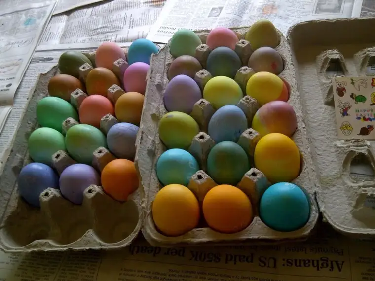

Lent is over; winter, too. Spring, color, buds, and shiny eggs and eyes have arrived.
My mother was here for a visit and treated us generously. Her presence always brightens up the place, with her little treats and offers of help and specials meals with family and friends.
I think she likes that we still dye Easter eggs. She’s always ready to help.
Here is the full array of this year’s egg palette, sideways because the photo won’t cooperate (it’s not eggsactly perfect).

A few always stand out as astounding. This year, one of my favorites came from middle child Beth, who somehow created a sunset-looking egg with her talented hand.
Though it didn’t come easily, I did get the kids all in one spot for at least one Easter shot, though the photo was on the hazy side. This came after a beautiful Easter mass and brunch, thanks be to God!
And finally, the girls and I in our Easter colors trying to stay warm. Despite the sun, there was a breeze and a chill Easter Sunday.
As I read my “Magnificat” at the start of mass, something jumped out in a reflection by author Heather King, quoting Polish poet Czeslaw Milosz. The lines come from his poem, “You Whose Name,” through which he imagines the final defeat of death:
A retinue advances in the sunlight by the lakes.
From white villages Easter bells resound.
Oh yes, there it is, there it is, the sound, the visual of hope. Yes, and don’t, whatever you do, let it slip away. Life is too precious.
I’m glad to be back. Though I suspect shorter posts than in the past in general, it will be good to come here and mingle once again, to read, write and share with the blogging community.
Here is my published contribution to Easter;
a story that appeared on Easter Sunday, 2012, in our local daily, The Forum; profile of a woman who converted to Christianity from Judaism.
Easter blessings to you as we continue to move through this special season!
{kind=link}
{kind=link}
{kind=link}
{kind=link}
{kind=link}